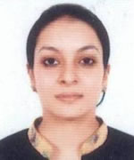
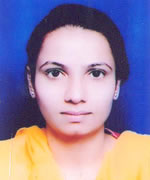
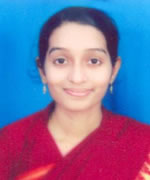

Faculty
Message from The Principal
The single most important mission of a good institution is to equip young men and women with knowledge, skill and personal attribute consistent with the need of society. Keeping this in view the Nightingale Institute of Nursing continuously strive to maintain qualitative environment, which is conducive for effective learning.
Our Institute was established in September 2003 to meet the ever-growing demand for trained professional Nurses for Health Care Industries. Our Nursing Program is approved by Indian Nursing Council, U.P. medical faculty, Government of Uttar Pradesh and affiliated to Choudhary Charan Singh University. Meerut. We work closely with many super specialty hospitals Viz. Northern Railway Central Hospital New Delhi, Fortis Hospital Noida, Metro Hospital Noida, Lal Bahadur Shastri Hospital New Delhi, IHBAS Delhi, and other health care agencies such as District Hospital and Primary Health Centre.
Ms. Kalpana Mandal, Principal
M.Sc Nursing, B.Sc (N), B.Sc Pure Science
In order to develop overall personality students are encouraged to conduct and participate in various interactive Programmes involving faculty and eminent personalities from various hospitals and Institute.
On behalf of Nightingale Education Society, I welcome you to join any of our career oriented Nursing courses and wish you productive and enriching years with us.
Students at Nightingale Institute of Nursing receive training in state-of-the-art knowledge from our distinguished faculty members, as well as from many visiting expert clinical preceptors in Delhi, NCR area.Our graduates, who will lead nursing in the next century, are prepared to work in community, hospitals and related settings, in private health care centers and in collaborative practices with physicians.
The faculty of the institute are of experienced professional nurses who hold academic degree like B.Sc. Nursing, M.Sc. Nursing and M.Phil and participates in different professional organizations at the local, state and national levels. In addition, they have held clinical, research and administrative positions in a variety of health care agencies.
All modern Audio-Visual Aids including OHP, LCD Projector, Computers, World's top class Films on Nursing Education etc, are used in teaching-learning process.
Learning is a lifelong process which requires a commitment to personal and professional growth and continued development of individual ability. This pursuit of knowledge and wisdom is the responsibility of both faculty and students.
Our Faculty
- Ms. Kalpana Mandal
Principal
Community Health Nursing
M.Sc Nursing, B.Sc (N), B.Sc Pure Science - Dr. OP Nangia
Lecturer
Ph.D (Physiology) 1968 - Ms. Lekha Singh
Lecturer
M.Sc Nursing, B.Sc Nursing - Ms. Jettini Thekkel Mathew
Nursing Tutor
B.Sc Nursing  Ms. Shalu Choudhary
Ms. Shalu Choudhary
Lecturer
M.Sc Nursing, B.Sc Nursing- Ms. Neha Vasudev
Lecturer
OBG
M.Sc, B.Sc. Nursing - Ms. Poonam Sharma
Lecturer
M.Sc, B.Sc. Nursing - Ms. Rajwant Kaur
Lecturer
Psychiatric Nursing
M.Sc.(Nursing), B.Sc(Nursing) - Ms. Rajwinder Kaur
Nursing Tutor
B.Sc. Nursing - Ms. Ritu Soni
Nursing Tutor
B.Sc Nursing - Ms. Sandhya
Clinical Instructor
B.Sc Nursing - Ms. Soumya
Clinical Instructor
B.Sc Nursing - Ms. Yumnam Surbala Devi
Lecturer
M.Sc, B.Sc. Nursing - Ms. Sweta Kukreti
Clinical Instructor
P.B.B.Sc Nursing, General Nursing Midwifery - Ms. Vijeta Rana
Nursing Tutor
B.Sc Nursing - Ms. Anugrah Charan
Lecturer
M.Sc Nursing, BSc Nursing  Ms. Aruna Arambam
Ms. Aruna Arambam
Lecturer
M.Sc. Nursing, B.Sc Nursing- Ms. Aswathy Krishnan Nair
Nursing Tutor
B.Sc. Nursing - Ms. Aswani Bose
Lecturer
Medical Surgical Nursing
M.Sc, B.Sc. Nursing - Ms. Blessy Samson
Lecturer
Medical Surgical Nursing
M.Sc. Nursing, B.Sc Nursing - Ms. G.Soniya
Lecturer
M.Sc Nursing, B.Sc Nursing - Ms. J.Sobiya
Lecturer
M.Sc, B.Sc. Nursing - Ms. Jainish Sagar
Clinical Instructor
B.Sc Nursing - Ms. Juby Mol George
Clinical Instructor
B.Sc.Nursing - Ms. Karthika Krishanan
Clinical Instructor
B.Sc Nursing  Ms. Lima Mathew
Ms. Lima Mathew
Paediatric Nursing
M.Sc, B.Sc. Nursing